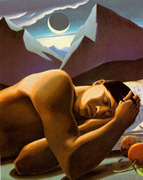
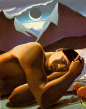
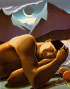

One Hundred Years
of Solitude
a Hypertext project by
Anthony Newman
and
Brian Maul
An annotated reading of a selection of pp.359-370 of
One Hundred Years of Solitude
for Prof. K. Fitzpatrick
ENGL141, Contemporary Fiction, Pomona College
Brief Bibliography
The Reading
 
